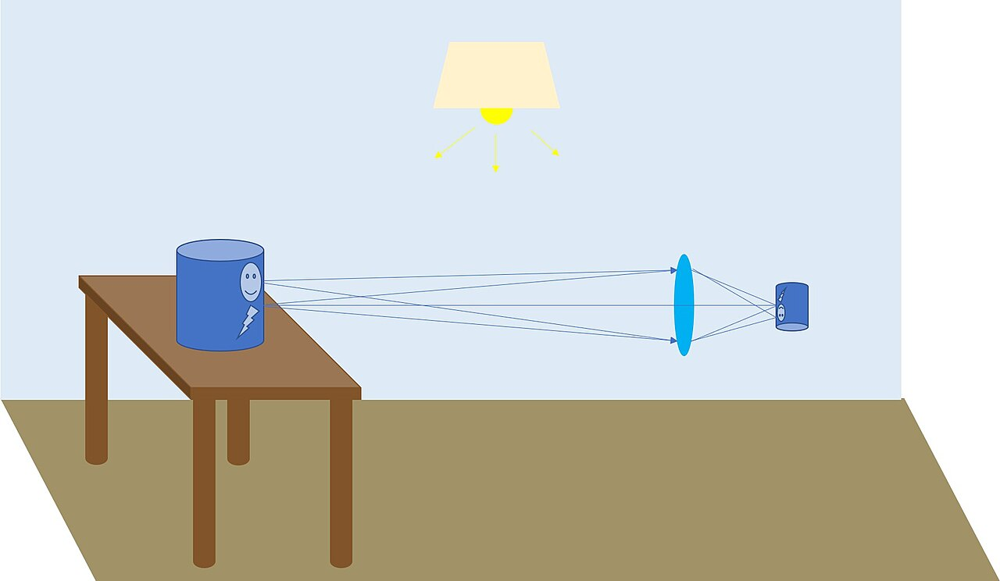

Görüntü oluşumu, ışığın bir nesneden gözümüze veya bir algılayıcıya (örneğin bir kamera sensörüne) nasıl geldiği ve bu süreçte nasıl bir görüntü oluşturduğu ile ilgilidir. Görüntü oluşumu, optik sistemlerin temel prensiplerine dayanır ve genellikle geometrik optik ve fiziksel optik kavramlarıyla açıklanır.
